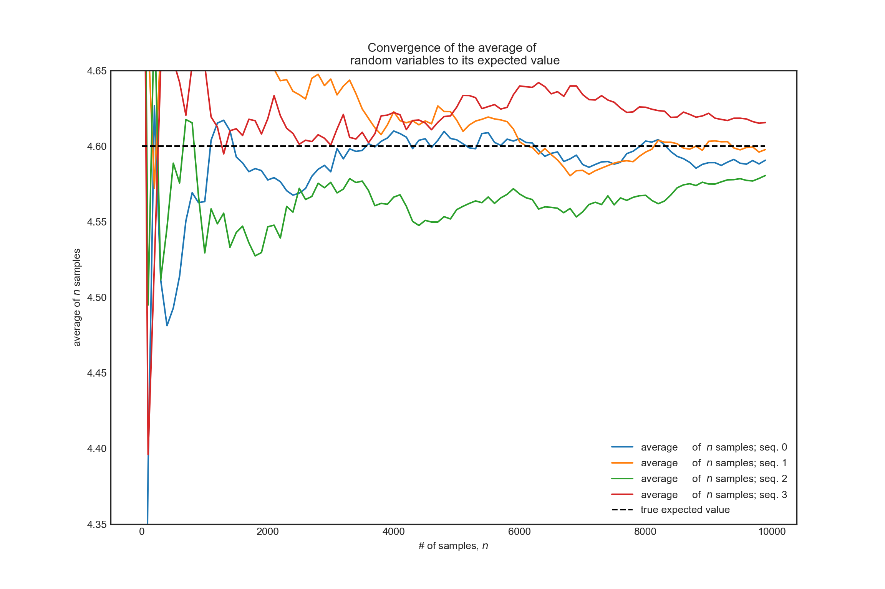
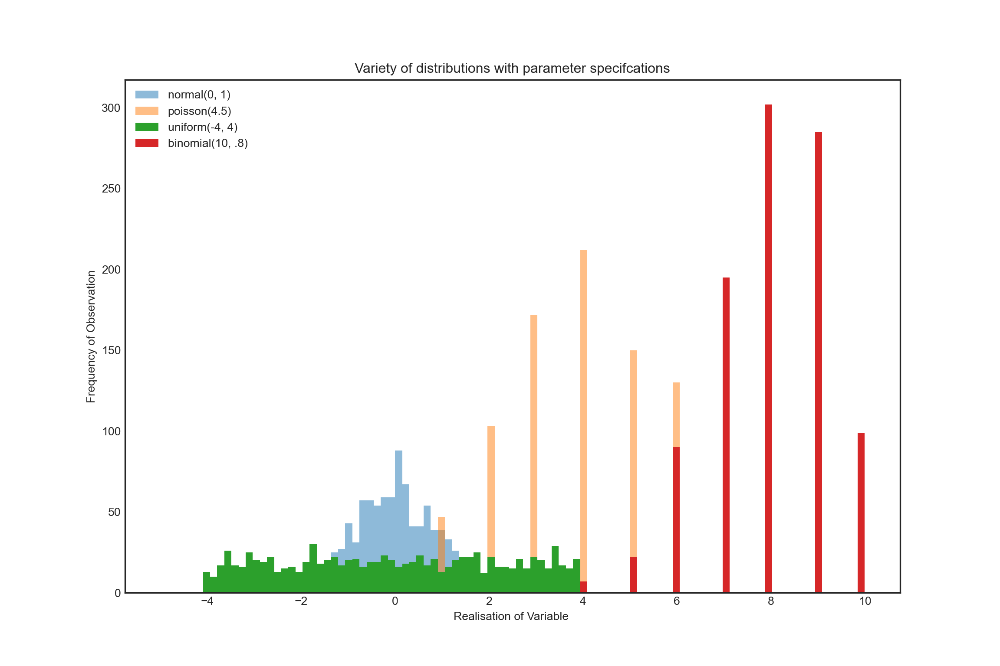
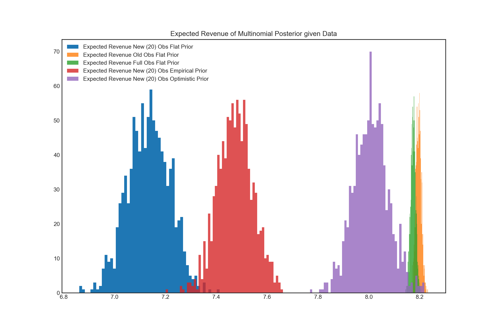
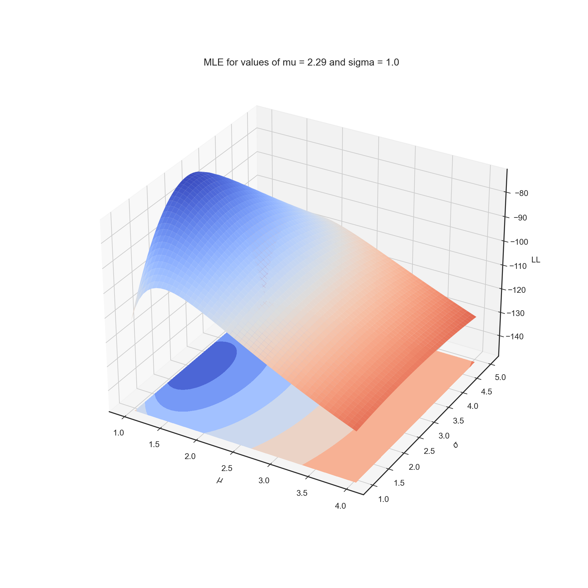

Chapter 2 Expected Utility: A Primer
2.1 Average Man
In the 1840s the Average man stalked the nightmares of Augustin Cournot. The mathematician was haunted by a melange of imagined parts. A Frankenstein’s monster of mismatched limbs, variously soldered, stapled or sown at the joints. He worried that no one but a “physical monstrosity” could exhibit the average, weight, height and other mean attributes in one body. (Stigler 2016) But fantastical fears were no bar to a useful mathematical fiction. The notion of averaging was a technological breakthrough - applications of averaging multiplied without cease: polling, gambling, forecasting - statistics were recorded everywhere, compounding one on another; averages of averages tenuously tethered to observable facts by layers of abstraction and scales of measurement.
Slowly, doubts began to creep back into the statistics. In the 1970s the psychologist Paul Meehl would worry that such brute approximations had stifled the development of the softer sciences and contributed to the mis-measurement of man. He would go on to elaborate twenty features of psychological science which made such measurement constructs inapt, unreliable and difficult to clearly falsify. This was progress! (Meehl 1978) He then showed that the methods of validating such constructs were the main culprit and the likely cause of psychology’s implausible claims to concrete, replicable results. Around thirty years later some of the same replication issues would come to be called a crisis. Cournot was right to fear.
Seen from the perspective of a patient the difficulties are more urgent and stark. In 2019 Esme Yang would write with hope of the comfort given by a diagnosis, the knowledge that she was not “pioneering an inexplicable experience.”1 To find yourself described in the DSM provides: a framework and the glimmer of a cure, a chance to slot yourself into a category, a community of care and a medicinal regime. Frustrating then when the categories themselves are in flux. Diagnostic criteria arrayed over page after page attempting to capture the elusive core of a psychological dysfunction. Descriptions are derived from clinical interviews correlated and meshed with genetic markers, then poorly mapped to a family of ailments. Neither clearly bipolar disorder nor manic depression, schizophrenia, psychosis or schizo-affective disorder. But an idiosyncratic presentation (as they all must be), uniquely felt and individually suffered.
Wang’s collection of schizophrenias defy easy taxonomy “because there are just so many different ways in which people can develop a syndrome that looks like schizophrenia … as we now define it.” The task then becomes one of coping with uncertainty and adjusting expectations. It’s not so exact a science that you can measure twice and cut once. The measurement schemes change and you need multiple cuts. You measure out the impact of treatments and the trade-offs - what’s non-negotiable and how many side-effects are acceptable? What works for you versus what’s advised by the professionals. Sterile cost-benefit considerations become suddenly dramatic and life changing.
2.1.1 …and Expected Value
There is an algorithm beloved by bureaucrats. An unsung hero of administrators and accountants. An algorithm both ubiquitous and under appreciated. It’s pivotal for nearly every business and informs the actions of tech firms and policy makers the world over. It is only mildly hyperbolic to say that understanding this formula unlocks wealth and power. The algorithm lies at the heart of online A/B testing, all policy analysis, sound strategy and poker play. \[ EV(O)_{p} = p_{1}u(o_{1}) + p_{2}u(o_{2}) + ... + p_{k}u(o_{k}) \]
The expected financial value of a random process is just the sum of the utility (typically dollar outcomes) weighted by their probabilities. Outcomes can vary from deals of cards, to customer transactions, election results, continued sanity. Pascal can argue sincerely that such considerations compel even belief in God. The infinite downsides of hell at any likelihood ought to compel even the cynical sceptic. But the formula, glossed as a rule for rational action, merits your attention for more mundane wagers too. If you intend to maximise your expected value, the meaning of probability is not an idle concern.2 While statistics are often tortured to rubber stamp decisions and probabilities are abused to fit policy prescriptions with false precision, the crisp clarity of the rule has an enduring appeal that promises to sift the murky swamps of Big Data. It’s a scalpel that anyone can wield to parse the syntax of statistical jargon and carve answers from an abstract space of probabilities. “What’s my expected return? My likely life-quality?” - a simple question, with a surprisingly complex answer.
Decision theory is an abstract formalism which purports to account for how you ought to reason under uncertainty, conditional on knowing your own mind, what you want and the likelihood of those outcomes. Wrestling with a diagnosis of schizophrenia you weigh your future in the face of sickness while knowing your mind could fail in the act, knowing, perhaps, you’re not yourself. Schizophrenics are involuntarily detained if a medical professional deems them to have lost sufficient “insight”3 , but the stated dysfunction assumes that these kinds of insight should be transparent when the psychiatric crisis is resolved. We’ll see that the level of insight assumed by decision theory is, at best, hard won and far from transparent.
There is a secondary complication in that whenever expected utility as used as an explanatory model of rational action, there is a risk of pivot, a point where it is substituted for more obscure black-box optimisation techniques over metrics of profit or overall accuracy. The focus switches from modelling the consumer or the patient to modelling returns based on the consumer and the firm’s expected value. Swapping a customer catering model for a customer-as-commodity perspective focused on profit in aggregate and customer acquisition. The tendency is common because profit overwhelms all other priorities, but the loss of understanding typically amounts to a longer term net-loss. Shareholders take comfort from increased profit and algorithms deployed at scale, but it’s rare that any single algorithm actually or always maximises the available profit. This dynamic enforces a kind of inescapable see-saw motion where the consumer modeling exercise goes through a constant feedback loop. A good model (informal or formal) of human needs and wants feeds a better a predictive model of individual action. When the latter fails we go back to the utility curves and the algorithm of expected value because it is (if not reliably predictive) a rich and deeply explanatory model of human action under uncertainty.
2.2 Probability: Dual Aspects
Probability emerged slowly and with dual aspects. On one tradition probability refers to the long run tendency of a random process, on another probability is construed as the degree of belief in an outcome. On the first (frequentist) interpretation a probability distribution has certain fixed theoretical characteristics: as in a uniform probability distribution of a fair coin where all outcomes are equally likely, or as with the normal distribution where most outcomes cluster symmetrically about a central average. On the second (Bayesian) reading the characteristics of the probability distribution are learned from the data. The controversy centres around the fact that it’s unclear how a frequentist could ascribe probabilities to unique events. Without appeal to a large set of observations (or known theoretical distribution) the claim that an event appears frequently or infrequently is not well defined. Consequently, tabulations of probability appear inappropriate for claims of unique or rare events. In contrast the Bayesian is content to ascribe probabilities to any all partial beliefs no matter how specific. For the Bayesian, the probability calculus is a set of edicts about how to rationally manage and modulate your beliefs. So it’s acceptable to have a probabilistic belief in rare cases so long as you update those probabilities with new data when available.
These two approaches are united by the Law of Large numbers which states that as the size of our sample increases our sample average will converge to the expected realisation of the theoretical process.
\[ \frac{1}{N} \sum_{i = 1}^{N} O_{i} \text{ converges to } E(O) \text{ as } N \text{ approaches } \infty \]
In this graph we have fixed a Poisson distribution with a mean of 4.5 and can see three examples of how consecutive averaging from the increasing sample sizes results in a closer and closer convergence to the (true) population mean.
# set up the ground truth
np.random.seed(100)
sample_size = 10000
expected_value = lambda_ = 4.6
poi = np.random.poisson
N_samples = range(1, sample_size, 100)
for k in range(3):
samples = poi(lambda_, sample_size)
partial_average = [samples[:i].mean() for i in N_samples]
plt.plot(N_samples, partial_average, lw=1.5, label="average \
of $n$ samples; seq. %d" % k)
plt.plot(N_samples, expected_value * np.ones_like(partial_average),
ls="--", label="true expected value", c="k")
plt.title("Convergence of the average of \n random variables to its \
expected value")
plt.ylabel("average of $n$ samples")
plt.xlabel("# of samples, $n$")
plt.legend()
lims = plt.ylim(4.35, 4.65)
plt.show()
Though common knowledge today, in 1650 ``the very concept of averaging is [new]… and most people could not observe an average because they did not take averages.(Hacking 2006) Systematically grappling with the implications of observations is a somewhat recent human endeavour - one which is far from perfected. This tendency is now fundamental to the interpretation of probability. Take a game with fixed and fair odds and we see that repeated play will converge over time because of characteristics which govern the process. Dice are a homely example. In the wild we never know the characteristics which cause the observed spread of outcomes, but such is the influence of gambling on probability, that we assume there exists a stable pattern to be gamed. Partially this is pragmatic, the maths is more tractable if we can assume a well behaved underlying process. The results are compelling: The Normal (Bell Curve) distribution, the Poisson distribution the Bernoulli distribution (to name a few) are all rightly famous. Their shapes are characteristics of innumerable random processes. The distributions cleanly circumscribe and corral likely patterns of events.
normal = np.random.normal(0, 1, 1000)
poisson = np.random.poisson(4.5, 1000)
uniform = np.random.uniform(-4, 4, 1000)
binomial = np.random.binomial(10, .8, 1000)
bins = np.linspace(-5, 10, 100)
h1 = plt.hist(normal, bins, alpha=0.5, label='normal(0, 1)')
h2 = plt.hist(poisson, bins, alpha=0.5, label='poisson(4.5)')
h3 = plt.hist(uniform, bins, label='uniform(-4, 4)')
h4 = plt.hist(binomial, bins, label='binomial(10, .8)')
plt.legend(loc='upper left')
plt.title("Variety of distributions with parameter specifcations")
plt.xlabel("Realisation of Variable ")
plt.ylabel("Frequency of Observation")
plt.show()
But the gambling paradigm clouds the fact that in practice we start on the left side of the law of large numbers (with samples) and we often start with small numbers resulting from a unknown number of data-generating processes. Well behaved probability distributions are rare beasts; a tiny fraction of the world’s arbitrary menagerie. The fundamental question in probability is not whether probability is a measure of belief or frequency - it is whether we can safely assume that the underlying process adheres to a known model? The Bayesian focus is to try and learn from the new data the expected characteristics of the underlying process, while the Frequentist tries to gauge the accuracy of their assumptions about the underlying process. Both are attempts to validate the structure of the model’s theoretical distribution to inform inference. If we can’t validate a model, we’re better learning what we can from the sample, trusting to wide confidence intervals and worst scenario planning. But in all cases when we need to make a decision, the following questions are inescapable : What are your expectations based on? How do they figure in our choices, and can we use them to improve our outcomes?
2.3 Small Worlds and Statistical Inference
Anissa Weieir and Morgan Geyser, later diagnosed with schizopoty, were in 2017 trailed for the attempted murder of their friend Payton. While believing themselves to be acting at the behest of Slendar Man, they were ``willing to forgo even friendship for the sake [their] version of unreality".4 Just as in the depth of an obsession reality can be warped by a psychotic focus, a statistical model will accentuates some parts and ignores others.
This narrowness can have devastating effects if deployed without care. But prediction is a visceral need, unavoidable, it precedes the sophistication of probability in any order of analysis. Without some regularity between \(X, Y\) we can only interpret their collisions as timorous noise. But even when there is a better than arbitrary correlation between \(X, Y\) we’ll insist on ascribing a measurable probability to their association. Heuristics will kick in, and confidence will grow out of proportion to the evidence. So whether we view probabilities as a measure of credibility or frequency, the focus is always on a process which in reality reveals a pattern under repetition. Even tenuous connections can be enough to cause havoc. Models, more often than not, are deliberate simplifications of complexity, attempts to formulate a unobserved process within a mathematical structure. Lego-like versions of the world are built and rebuilt, in which we bash parts together to see what reliably sticks. Forget about the pieces we don’t own. Count the pairs of blocks that: match, wedge, smash, click-into-place or break, then draw out the ratio of success and the spread of outcomes. Parse out the details of how reds go with greens, and blues with yellows. This is your sample distribution. The expected gain depends on both this uncertainty, measured in this small world, and the finer points of statistical inference.
A [small world] is… completely satisfactory, only if it is actually a microcosm, that is, only if it leads to a probability measure … that can be written down explicitly pg 88 (Savage 1954)] .
The danger of shrinking your world comes when you mistake the map for the territory and act on that delusion.
Small worlds are machines for figuring out expected values of a statistical process. We shrink the parameter set to better measure the variance and flux throughout the system. For any hypothetical system there can be multiple plausible approximations of the underlying process which need to be assessed comparatively on their “goodness” of fit. We iterate through new and improved versions, each an attempt to make a conjectural connection between \(X, Y\) mathematically precise. But once built, they embed the errors and assumptions made in their design. McElreath dubs them Golems, primed and then loosed on the world, insensitive to subtlety and context they perform only as instructed. Consider how a basic regression model tries to predict an outcome \(Y\) as linear function of some observed features \(X\):
\[ Y = const + \beta X + \epsilon \]
where \(\epsilon\) is a random variable representing the error (or noise). A modest notational device for disaster. While \(const, \beta\) are parameters estimated by an optimisation process to ensure the equation fits the data as neatly as possible. In the plot below we have a series characterised by change. After the first shock we can refit the model so that the line tracks well with the evolving data. After the second shock we try another refit, but the range the and variance of the data makes our basic model a poor fit, i.e. the data no longer exhibits a linear relationship. This presents three examples of error in the modelling process: (i) it’s difficult to identify (in the moment) those changepoints in the data which reflect structural change, (ii) the linearity assumptions that go into the model are sound but the parameters need be re-estimated based on the new data and (iii) the third linear model is simply a terrible match for the pattern in the data.
### Piecewise Linear Fits
x = np.array([1, 2, 3, 4, 5, 6, 7, 8, 9, 10, 11, 12,
13, 14, 15, 16, 17, 18, 19, 20, 21], dtype=float)
y = np.array([5, 12, 9, 11, 13, 10,
28.92, 42.81, 56.7, 70.59, 84.47,
75.36, 112.25, 100.14, 140.03, 3,
70, 300, 5, 100, 50], dtype=float)
def piecewise_linear(x, b1, a1, b2, a2, b3, a3):
funcs = [lambda x:b1*x + a1,
lambda x:b2*x + a2,
lambda x:b3*x + a3]
conds = [x < 7, ((x >= 7) & (x < 15)), x > 15]
return np.piecewise(x, conds, funcs)
p , e = optimize.curve_fit(piecewise_linear, x, y, method="trf")
a, b = polyfit(x, y, 1)
xd = np.linspace(0, 20, 1000)
plt.plot(x, y, "o")
plt.plot(x, a + b * x, '--', label="Global fit: {b: .2f}x + {a: .2f}".format(b=b, a=a))
plt.plot(xd, piecewise_linear(xd, *p),
label="Linear fit 1: {b: .2f}x + {a: .2f} \n"
"Linear fit 2: {b1: .2f}x + {a1: .2f} \n"
"Linear fit 3: {b2: .2f}x + {a2: .2f}".format(b=p[0], a=p[1],
b1=p[2], a1=p[3], b2=p[4], a2=p[5]))
plt.axvline(x=7, color='red')
plt.axvline(x=15, color='red')
plt.title("Piecewise Linear Fits of Series at Changepoints")
plt.legend()
plt.show()
Every model is a guess as to the implicit order in apparent noise. Sometimes there is no order, and other times the patterns is too subtle for a dumb model to capture. In practice you never really know whether a single new error stems from a misfit but appropriate model or an entirely inappropriate model. As we increase our number of sample fits we hope to better approximate the true linear process (if any) generating the data. Imagine now that the data points in Figure 3 are repeatedly re-speckled over the canvas. We can refit a new model for each set of scattered data points and each refit gives us a new sample values for \(const, \beta\). If the underlying data generating process is stable, then the parameter fits will converge to the correct values of \(const, \beta\); correct in the sense that they can be used to draw the line of best fit for the data. A statistically stable process is one that can be modelled with errors \(\epsilon\) normally distributed around \(0\), so that the model will be because \(E(\epsilon) = 0\). Our predictions will overshoot in some cases but on the whole the errors up and down will cancel each other out.
“Typically, the assumptions in a statistical model are quite hard to prove or disprove, and little effort is spent in that direction. The strength of empircal claims made on the basis of such modeling therefore does not derive from the solidity of those assumptions. Equally, these beliefs cannot be justified by the complexity of the calculations… These observations lead to uncomfortable questions” (Freedman 2009)
Forecasting with the parameters of best fit minimises our forecast errors because the fluctuations are stable about the centre of the line. These are the required assumptions for a process to exhibit the tendency of regression towards the mean. If they’re not met, we will see poor parameter estimates and wild swings away from the linear path. The fundamental statistical assumption here is about the properties of our mistakes! The model is less plausible if our judgements are made in the grip of a delusion.
2.3.1 Modeling: Improper Assumptions and Skewed Expectations
Below we build two sampling distributions based on different models of an underlying processes. One in which the errors are independent, normally distributed around \(0\) and in the other the errors are correlated in a sine-wave like pattern, increasing and decreasing periodically. This is akin to the difference between measuring error when predicting the heights of randomly sampled people versus predicting the sales volumes on randomly selected days of the week. A random sample of daily sales risks clumping weekends together and skewing the expected values. No such risk exists when sampling from independent individuals.
#### Sampling Distributions of Linear Fits
#### Build True Model
N = 10000
X = np.random.uniform(0, 20, N)
uncorrelated_errors = np.random.normal(0, 10, N)
corr_errs = np.random.uniform (0, 10)
corr_errs = corr_errs + np.sin(np.linspace(0, 10*np.pi, N))
corr_errs = corr_errs + np.sin(np.linspace(0, 5*np.pi, N))**2
corr_errs = corr_errs + np.sin(np.linspace(1, 6*np.pi, N))**2
corr_errs = corr_errs + .6*X
Y_corr = -2 + 3.5 * X + corr_errs
Y = -2 + 3.5 * X + uncorrelated_errors
population = pd.DataFrame({'X': X, 'Y': Y, 'Y_corr': Y_corr})
fits = pd.DataFrame(columns=['iid_const', 'iid_beta',
'corr_const', 'corr_beta'])
for i in range(0, 1000):
sample = population.sample(n=100, replace=True)
Y = sample['Y']; X = sample['X'] ; Y_corr = sample['Y_corr']
X = sm.add_constant(X)
iid_model = sm.OLS(Y, X)
results = iid_model.fit()
corr_model = sm.OLS(Y_corr, X)
results_2 = corr_model.fit()
row = [results.params[0], results.params[1], results_2.params[0], results_2.params[1]]
fits.loc[len(fits)] = row
fits.boxplot()
plt.suptitle("The Sampling Distribution of Parameters for a Linear models")
plt.title("Based on 1000 fits on 100 observations")
plt.show()
In the case with independent errors the expected value for our parameter estimates match almost exactly the true values of the process. In the second model with correlated errors the parameter estimate for our constant is 4.9 which is significantly different from the true value of -2, and will lead to systematically skewed predictions. Statistical models are just algebraic equations where we use regular sampling to solve for \(Y\) from \(X\). Because Y is also a random variable the regression model encodes a conditional expectation result.
def draw_gaussian_at(position, sample, ax_main=None, model='iid', color='k', **kwargs):
filter_var = round(sample['X'], 0) == position
avg = sample[filter_var]['predicted_Y_' + model].mean()
min = sample[filter_var]['Y'].min()
max = sample[filter_var]['Y'].max()
dist = pd.Series(sample[filter_var]['predicted_error_'+ model].values)
kde = sm.nonparametric.KDEUnivariate(dist)
kde.fit()
density = kde.density
density /= density.max()
density *= 1
y_axis = np.linspace(min, max, len(density))
err = sample[filter_var]['predicted_error_'+ model].mean()
label = "Expected error X = {x:}: {err: .2f}".format(err = err,x=position)
ax_main.plot((density + position), y_axis, color=color, label=label)
sample = population.sample(n=1000, replace=True, random_state=100)
true_model = sm.OLS(sample['Y'], sample['X']).fit()
error_model = sm.OLS(sample['Y_corr'], sample['X']).fit()
sample['predicted_Y_iid'] = true_model.predict(sample['X'])
sample['predicted_Y_corr'] = error_model.predict(sample['X'])
sample['predicted_error_iid'] = sample['Y'] - sample['predicted_Y_iid']
sample['predicted_error_corr'] = sample['Y'] - sample['predicted_Y_corr']
fig, ax1 = plt.subplots()
ax1.plot(sample['X'], sample['Y'],'o')
ax1.plot(sample['X'], sample['predicted_Y_iid'])
for each in [2, 5, 15]:
d = draw_gaussian_at(position=each, sample=sample,
ax_main=ax1, model='iid', color='r')
plt.title("Error Distributions around predicted Y values for the {model:}".format(model='iid model'))
plt.legend()
plt.show()
\[ E(Y_{i} | X_{i} = x )\]
For fixed values of X, the predictions \(Y_{i}\) can be spread in a pattern enforced by the various ways we can realise the linear function with estimates for \(\beta\) and \(const\). But the regression model selects the best parameter values to minimise the squared prediction error and represent the conditional expected distribution of \(Y\).
“The statement that regression approximates the [Conditional Expectation Function] lines up with our view of empirical work as an effort to describe the essential features of statistical relationships without necessarily trying to pin them down exactly” p38 - (Angrist and Pischke 2008)
The consequent point predictions for \(Y\) are always expected values, skewed by the how the parameters are realised from sample data as much as by poor choices in model design and predictive features. So too then any measures of expected utility based on these models or inferences from these distributions.
2.3.2 Frequentism: Inference from Expected Frequency
Making inference from a model is delicate thing. Even simple cases come with controversy. Count the number heads in a series of 5 successive coin flips, then repeat the process 1000 times and you’ll arrive at a proportion which characterises that process. If it’s a fair coin the long run expected result will be half the number of your coin flips. If the coin is weighted you might have as few as 0. This is the binomial distribution, and it really shines when you’re trying to gauge fairness. If a process is biased, the distribution will be skewed. We can use this fact for inference. Consider a dispute over whether the game was rigged.
\[ H_0 : \text{ true proportion of heads } = 0.4 \] \[ H_1 : \text{ true proportion of heads } = 0.5 \]
samples = 5
prop = 0.4
successes = 3
X = binom(samples, prop)
x = X.rvs(1000)
points = sns.distplot(x, hist=False, kde=True).get_lines()[0].get_data()
prob = 1 - X.cdf(2)
z = points[0]
y = points[1]
plt.fill_between(z,y, where = z >= successes,
color='r', label="Probability >= 3:{p: .2f}".format(p=prob))
plt.fill_between(z,y, where = z < successes ,
color='g',label="Probability < 3: {mean: .2f}".format(mean=1-prob))
plt.legend(loc='upper right', title='Legend')
plt.title("The P-Value for a sample of 5 with >=3 head \n given a biased coin with expected proportion 0.4")
xlim = plt.xlim((0, 5))
ytck = plt.yticks([])
plt.show()
Take \((H0)\) as given then if we observe a sequence: \[ (3in5): H, H, H, T, T\] what does it say about the possibility that we’re being hustled? If the coin is biased, then the count of heads in repeated sampling will reflect a clear bias. For any new data we can check if the data is consistent with the data generated by the biased coin. The pattern of reasoning is straightforward (i) make some assumptions about the structure of the random process under investigation, (ii) tease out the consequences of these assumptions (iii) evaluate the incoming data against these consequences to see if you need to revise your assumptions. The frequentist asks, does the data looks weird given the assumed shape of our probability distribution?
[I]n statistical terms \(H_{0}\) [the null hypothesis] refers to a probability model and the very word `model’ implies idealization. With a very few possible exceptions it would be absurd to think that a mathematical model is an exact representation of a real system… We use the term to mean that in the current state of knowledge it is reasonable to proceed as if the hypothesis was true." pg 31 (Cox 2006)
In this instance the shape of the binomial distribution defined by a 0.4 biased coin allows for significantly greater than 5% chance for observing the above sequence. So we do not have enough reason to reject \((H0)\) at the traditional threshold. By design the assumed distribution builds in characteristics of long-run variance of the process, and the slim threshold for rejection is designed to minimise incorrect rejections of \((H0)\). We should remain suspicious that we’re being conned. However, with a low number of observations the sample distribution is unlikely to be properly representative. This makes even small p-value thresholds unreliable. We cannot blindly take a sample poll to imply the spread or volatility of a population, and with low or un-representative samples it’s hard to justify any kind of inference from expectation, since we are not in a position to justify the choice of the null model either! If your hypothesis is both derived and validated against small samples, you risk being swayed by recent observations.
More fundamentally the notion of statistical significance usually cannot falsify the hypothesis under consideration. The sheer number of auxiliary variables that you might need to control for, makes the practical task of definitively rejecting the null almost impossible. There are too many imagined ways in which the auxiliary conditions, sufficiently modified, would have resulted in observations that corroborate the null model. This problem is especially acute in psychological science where the auxiliary contingencies of designing a measurement scale and checking diagnostic criteria are almost always questionable. So the null hypothesis is not confirmed, but not refuted either, it is just preserved in useless stasis.
“[I]t did not get integrated into the total nomological network, nor did it get clearly liquidated as a nothing concept, it did not get killed or resurrected or transformed or solidified; it just kind of dried up and blew away…” pg807 in (Meehl 1978)
2.3.3 Bayes’ Rule: Inference to Expected Value
If instead we use probability to calibrate our beliefs, then we can be more explicit in our assessment of \((H0), (H1)\). Let’s assume that our prior beliefs about whether the game is rigged is 50/50. Then we evaluate the two hypothesis using Bayes’s rule for incorporating our prior belief and the data. The Bayesian asks whether our hypothesis is a good explanation of the data compared to alternatives. How, upon observing the data, should we view our hypothesis?
\[ \overset{posterior}{p(H_{i} | Data)} = \frac{\overset{prior}{p(H_{i})}\overset{liklihood}{p(Data | H_{i})}}{\underset{evidence}{\sum_{i=1}^{i =K} p(Data | H_{i})p(H_i)}}\]
where \(1 \leq i \leq K\) spans the ways in which the data could have been realised across all competing hypotheses.Then, in our toy example, we have:
\[ \frac{p(H_1 | 3 in 5)}{p(H_{0} | 3 in 5)} = \frac{\frac{.5\cdot .23}{.5\cdot .32 + .5 \cdot .23}}{\frac{.5\cdot .32}{.5\cdot .32 + .5 \cdot .23}} = \frac{.57}{.42} \]
which would lead us to infer that the coin was fair. The really radical move in the Bayesian setting is that you’re allowed to ascribe a probability to any event regardless of whether there is any long-run sequence to observe. You may know nothing about your opponent or the coin, but for Bayesians this is no bar to assigning suspicion in the form of expected probability, so long as you act in accordance with the axioms of probability and weigh the probabilities accordingly. In particular it promotes the direct comparison of competing hypotheses conditional on the evidence. It’s this free choice of prior which can seem arbitrary and unmotivated or even paradoxical, but in practice probabilities are rarely ascribed entirely without reason and it’s frankly irresponsible to ignore those reasons.
“When a piece of evidence E is produced in a court investigating the guilt G or innocence I of the defendant, it is not enough merely to consider the probability of E assuming G; one must also contemplate the probability of E supposing I. In fact, the relevant quantity is the ratio of the two probabilities. Generally if evidence is produced to support some thesis, one must also consider the reasonableness of the evidence were the thesis false. Whenever courses of action are contemplated, it is not the merits or demerits of any course that matter, but only the comparison of these qualities with those of other courses.” in (Lindley 1993)
Neither the Bayesian or Frequentist analysis ends with these simple calculations, both should continue to probe the limits of each hypothesis. We’d have to consider things like sample size, sensitivity testing, model performance, the cost of errors and appropriateness of the priors. The point is just that there are reasons for dispute. Bayesian inference acts like a logic engine for evidence, whereas the frequentist approach is more focused on diagnosing the possibility of error. In general they are complementary methods, and when they conflict the assumptions should be scrutinised. The frequentist evaluation of our biased coin is very sensitive to the choice of hypotheses, while the Bayesian approach is influenced by the choice of prior. Why set up a significance test against assumed cheating rather than assumed fairness? Why attribute equal weight to both hypotheses? Why use a 5% threshold if you’re concerned about systematic cheating? This example shows the heart of the conflict in the dual aspect of probability. There is enough latitude in the manner in which we set up a probability model that the mathematics of inference can yield inconsistent results. Both offer strategies for managing uncertainty, but both approaches come with baggage and in practice not all tests are equally taxing. Consider a more concrete example in the Bayesian spirit.
2.3.4 Example: Website Traffic
Websites and apps collect traffic and log interactions. Your details are captured and pulled into vast aggregates of consumer data. I can route and re-route your trajectory across an online environment. Applying the same pressures to tens of thousands of others, we can trace out how the topology of particular sites throw up speed bumps on the customer’s journey. Imagine we’re running a website which aims to funnel customers through to a number of different purchase plans. The historic patterns are relatively stable with only 10% of customers dropping out of our conversion funnel on a daily basis. We can sample actions online (Figure 7) under differing pressures with a view to evaluating expected values of repeated coercive prompts.
### Multinomial distribution
m_var = stats.multinomial(n=100, p=[.3, .4, .2, .1])
m_var_sample = m_var.rvs(1000)
m_var_2 = stats.multinomial(n=100, p=[.3, .4, .1, .2])
m_var_2_sample = m_var_2.rvs(20)
base = datetime.datetime.today() - datetime.timedelta(days=1000)
df = pd.DataFrame(m_var_sample,
columns=['plan_1', 'plan_2', 'plan_3','no_plan'])
df = df.append(pd.DataFrame(m_var_2_sample,
columns=['plan_1', 'plan_2', 'plan_3', 'no_plan']),
ignore_index=True)
df['totals'] = df['plan_1'] + df['plan_2'] + df['plan_3'] + df['no_plan']
df['plan_1_rate'] = df['plan_1'] / df['totals']
df['plan_2_rate'] = df['plan_2'] / df['totals']
df['plan_3_rate'] = df['plan_3'] / df['totals']
df['no_plan_rate'] = df['no_plan'] / df['totals']
date_list = [base + datetime.timedelta(days=x) for x in range(len(df))]
df.index = date_list
for i, column in enumerate([x for x in df.columns if 'rate' in x]):
ax = plt.plot(df[column], label=column)
plt.title("Outcomes of Signup Process after Website Change")
plt.legend(loc="upper left")
xticks= plt.xticks(rotation=45)
plt.show()
Assume the particular values for each plan, then the expected value of customer journey is just:
\[\begin{equation} \begin{split} EV(O) = p_{1}\$(o_{1}) + p_{2}\$(o_{2}) + p_{3}\$(o_{3}) + p_{4}\$(o_{4}) = \\ .3*\$10 + .4*\$7 + .2*\$12 + .1*\$0 = \\ \$8.20 \end{split} \end{equation}\]
Now imagine there was a change to the website and we observe the following pattern for the next 20 days. The change was made on the hypothesis (\(H+\)) that it would bring a positive boost to revenue. How much more positive? A slight expected increase makes it harder to conclusively reject the \(H+\) even in the fact of contrary indicators. If we observe the above pattern, then what is the new expected value? Have we decisively falisifed \(H+\)? From the frequentist point of view the macro distributional properties haven’t significantly changed. But given what we know about the change to the website it would be foolish to accept such a static distributional assumption. Looking only at the small sample of new data, the variance will be large and the estimates of rates of sign-up for each plan will be unstable. Following the Bayesian paradigm we can condition our expectations on the new data, the old data or all the data.
#### Calculate Expected Revenue
def expected_revenue(posterior_samples):
return 10*posterior_samples[:, 0] + 7*posterior_samples[:, 1] + \
12*posterior_samples[:, 2] + 0*posterior_samples[:, 3]
full_data = df[['plan_1', 'plan_2', 'plan_3', 'no_plan']]
weird_data2 = df[['plan_1', 'plan_2', 'plan_3', 'no_plan']].tail(20)
normal_data = df[['plan_1', 'plan_2', 'plan_3', 'no_plan']].head(1000)
# Bayesian Posterior
multinomial_posterior_new = np.random.dirichlet(np.array([100,
100, 100, 100]) + np.array(weird_data2.sum()), size=1000)
# Empirical Bayes
multinomial_posterior_full = np.random.dirichlet(np.array([100,
100, 100, 100]) + np.array(full_data.sum()), size=1000)
# Bayesain Posterior Prior Data
multinomial_posterior_old = np.random.dirichlet(np.array([100,
100, 100, 100]) + np.array(normal_data.sum()), size=1000)
multinomial_posterior_new_empirical_prior = np.random.dirichlet(
np.array([300, 400, 200, 100]) +
np.array(weird_data2.sum()), size=1000)
multinomial_posterior_crazy_prior = np.random.dirichlet(np.array([100,
400, 500, 0]) + np.array(weird_data2.sum()), size=1000)
expected_value_new = expected_revenue(multinomial_posterior_new)
expected_value_old = expected_revenue(multinomial_posterior_old)
expected_value_full_data = expected_revenue(multinomial_posterior_full)
expected_value_new_bias = expected_revenue(multinomial_posterior_new_empirical_prior)
expected_value_crazy = expected_revenue(multinomial_posterior_crazy_prior)
h1 = plt.hist(expected_value_new, histtype='stepfilled',
label="Expected Revenue New (20) Obs Flat Prior", bins=50)
h2 = plt.hist(expected_value_old, histtype='stepfilled',
label="Expected Revenue Old Obs Flat Prior", bins=50, alpha=0.8)
h3 = plt.hist(expected_value_full_data, histtype='stepfilled',
label="Expected Revenue Full Obs Flat Prior", bins=50, alpha=0.8)
h4 =plt.hist(expected_value_new_bias, histtype='stepfilled',
label="Expected Revenue New (20) Obs Empirical Prior ", bins=50, alpha=0.8)
h5 = plt.hist(expected_value_crazy, histtype='stepfilled',
label="Expected Revenue New (20) Obs Optimistic Prior ", bins=50, alpha=0.8)
plt.title("Expected Revenue of Multinomial Posterior given Data")
plt.legend(loc="upper left")
plt.show()
The above graph illustrates the spread in values expected revenue calculated on different slices of our data using Bayes Rule. Using a large number of observations, the influence of our priors are minimal and washed out by the data, giving us a strong point estimate with low variance stable around 8.2, but since the recent data involves a step change, we might be better off ignoring the old data. But we can also see that if we condition our expectations only on the new data with different priors drawn from the past data or hope, we can positively bias our expectations. Suppose we’re naive and accept either the optimistic prior or retain a frequentist approach, and accept that the website change is associated with a slight drop in revenue, do we revert to the old website or try to explain the dip by contingencies of the market and preserve our test for another thirty days?
This pattern is not rare. Nearly all substantial decisions are made with small samples in circumstances where past behaviour is not a guide. Past behavioural patterns are exactly what we’re trying to avoid or change. If you want to know whether the change on your website will drive a material change in financial revenue, you won’t have long run patterns to rely on, and it’s an open question on how to weight the new data. If you want to judge the long term consequences of a new symptom the same limitation of information applies. All models smuggle-in a host of statistical assumptions and these can be range from reasonable to absurd. Even when reasonable they’re only supported by large sample sizes, and most questions of interest are driven by novelty (or specificity) that short circuits appeal to robust patterns of history. Reasoning from small samples is common, best done with caution and plenty of caveats, but better reason than not. Expectations should be modified accordingly.
2.4 Utility Curves
We’ve discussed the slippery notion of a statistical model and how they hook onto the world. How they bake in statistical assumptions and roughly latch to reality by measuring proxies seeking to express expectations. We’ve seen also that inference from a model is not a straightforward step and depends on our needs and wants. What we seek to optimise over decisions stems from our measures of utility over those choices. This is itself a pregnant model of human rationality - one which achieved its most complete expression in the field of economics. Jevons would observe the difficulty as early as 1871:
The laws [of individual economic man’s behaviour] which we are about to trace out are to be conceived as theoretically true of the individual; they can only be practically verified as regards the aggregate transactions, productions and consumptions of a large body of people. But the laws of the aggregate depend of course upon the laws applying to individual cases. - quoted on pg 149 The World in the Model by Mary S. Morgan
Morgan notes how the core insight here is that the individual preferences determine the aggregate behaviour, and they cannot be ignored or assumed to cancel out. There is a respect for the subjective core of each individual’s decisions. We’ll return to the question of how to estimate such subjective utility, but for the moment it’s worth examining how (if granted) the model lends itself to the strategising over human action.
2.4.1 The Stakes: From Utility to Indifference
Our views of probability can flex up and down in response to facts, but it’s less clear how our estimates of utility change. Too much of a good thing often tends to the bad. So we dabble, sample and share. In pursuit of variety we swap our goods, shunning stale options in favour of the novel exchange. For a given good we can differ in our appetites but it’s relatively straightforward to find the point where - one more donut is one too many. While it can be a bit unclear how we should measure utility, once we’ve decided on a metric the mathematical characteristics are meaningful. If the scale is donuts, we can infer aspects of your attitudes from your acquisition and enthusiasm for donuts. In most cases we’re interested not just in your pursuit of pastries, but how you’d be willing to trade for those pastries.
We seek competitive advantage for our own produce to balance the cost owed to the skills of others. This coordinated compromise lies at the core of maximising subjective utility in a market, but at the limit some scenarios do not admit any admixture of goods. Not all babies can be cut in half. But in most cases a consumer will try to optimise their bundle of goods over an entire marketplace, preserving enough on one key good; money, to remain liquid. So, to a first approximation our utility estimate would seem to be a multivariate function.
\[ u(\mathbf{g}) = f(g_{0}, g_{1} ... g_{n}) \]
def linear_utility(x, a=2, b=4):
# This works fine on smaller numbers
return a + b*x
def quadriatic_utility(x, b=0.5):
return x - (b)*(x**2)
def logarithmic_utility(x, a, b):
return np.log(a) + b*np.log(x)
def negative_exp_utility(x, c=.5):
return -np.exp(-(c*x))
def narrow_power(x, B=2):
return (B / (B - 1))*(x**(1 - (1/B)))
xdata = np.linspace(0, 10, 100)
negExp = negative_exp_utility(xdata, 0.5)
quad = quadriatic_utility(xdata, 0.5)
narrow_pow = narrow_power(xdata, 2)
lin = linear_utility(xdata, 2, 3)
# Create plot
fig, axes = plt.subplots(2, 2)
labels = [r"-exp(-b*Q)", r"Q - b*Q$^2$", "a + b*Q", r"$(b / (b-1))*Q^{1-(1/b)}$"]
titles = ["Negative Exponential Utility Curve", "Quadratic Utility Curve",
"Linear Utility Curve","Narrow Power Utility Curve"]
y = [negExp, quad, lin, narrow_pow]
for i, ax in enumerate(np.hstack(axes)):
ax.plot(xdata, y[i], label=labels[i])
ax.set_title(titles[i])
tmp = ax.set_xticks([])
tmp = ax.set_yticks([])
ax.set_ylabel("U(Q)")
ax.set_xlabel("Q")
ax.legend()
fig.suptitle("Utility measures over increasing quantities of a good")
plt.show()There are number of ways we can specify a utility function as seen, but a typical example is the Cobb-Douglas function.
\[ u(\mathbf{g}) = g_{0}^{\alpha_{0}}g_{1}^{\alpha_{1}} ... g_{n}^{\alpha_{n}} \text{ where } \forall i \sum \alpha_i = 1\]
Then taking the case of two goods \(g1, g2\) we can determine an indifference curve where you would be willing to exchange quantities of \(g1\) for an agreeable amount of \(g2\). The task is to express the value of a given good as priced in terms of the other goods. Set
\[u(\mathbf{g}) = k = g_{1}^{\frac{1}{2}}g_{2}^{\frac{1}{2}} = (g_{1}g_{2})^{\frac{1}{2}} = \sqrt{g_{1}g_{2}}\] \[ \Rightarrow k^{2} = g_{1}g_{2} \Rightarrow \frac{k^{2}}{g_{2}} = g_{1}\]
Using this formula we can express how the quantities of fair exchange vary based on a fixed utility value. This is not to say that these curves represent an actual or objectively fair price, just that when measured in terms of our utility these are mappings of quantities of goods we would be happy to exchange. Your view of a fair price is encoded in your utility theory. It’s at this point when utility theory can be said to verge on empirical science. If we can model your preferences as a utility function characteristic of some general attitude toward acquisition, we might also hope to be able to predict future trades and cater for individual desires. Given your particular utility function we can derive your indifference curves over multiple goods - those points at which you’re happy to accept \(n\) of one for \(m\) of the other.
def cobb_douglas(g1, g2, a1, a2):
return g1**a1 * g2**a2
fig, ax = plt.subplots()
g1 = np.linspace(1, 10, 100)
g2 = np.linspace(1, 20, 100).reshape((100, 1))
contours = ax.contourf(g1, g2.flatten(), cobb_douglas(g1, g2, .5, .5), cmap=cm.coolwarm)
tmp = fig.colorbar(contours)
ax.set_xlabel("g1")
ax.set_ylabel("g2")
ax.set_title(r"Cobb Douglas: $g_{1}^{1/2}g_{2}^{1-(1/2)}$")
plt.show()
Contrast the case of a schizophrenic’s patient’s utility as they try to weight aspects of their health. Even if you could measure each dimension simultaneously, what scale captures the worth of autonomy and measures the trade off against clarity, delusion and paranoia? How do you plan for children in the fear of what your genetics could seed? Do you fear the harm done through inheritance or the looming lifelong responsibility of care for an affected child? Even adoption foists onto the child the burden of having you as a parent. The disease calibrates the cost, but the equations are hard to solve.5
2.4.2 Optimising Utility with Constraints
A further complication arises when we try to account for a consumer’s budget or resources. The shape of the Cobb-Douglas function in plot shows that the utility surface is constantly increasing with our rate of acquisition. So without any constraints the consumer would not achieve satisfaction, but continue like a glutton consuming forever without cease. Add a budgetary constraint and natural trade-offs between desire and cost mean that we need to find the maximum point at which an indifference curve intersects with our budgetary line. Instead of solving the equation:
\[ \text{ Find } g_{1}, g_{2} \text{ such that } u(g_{1}, g_{2}) = \lambda \]
we need to solve a constrained optimisation problem: \[ \text{ maximize } u(g_{1}, g_{2}) \text{ subject to } cost(g_{1}, g_{2}) = \lambda\]
This style of problem can be approached with the method of Lagrange multipliers. If we let:
\[ L = g_{1}^{\frac{1}{2}}g_{2}^{\frac{1}{2}} - \lambda(2g_{1} + 3g_{2} - 40) \]
where \(2\) and \(3\) are the unit cost of the respective goods, and \(40\) is our total budget. This \(\lambda\) is our Lagrangian multiplier - a term used to re-express the algebra of our equation as a function of the consumer’s capacity to spend.
g1 = np.linspace(1, 10, 100)
g2 = np.linspace(1, 20, 100).reshape((100, 1))
def g1_indifference(g2, k, alpha=1/3):
orig = k**(1/(1-alpha)) * g2**(-alpha/(1-alpha))
return orig
def plot_indifference_curves(ax, alpha=.5):
k = np.arange(1, 14, 3)
ax.plot(g2, g1_indifference(g2, k, alpha))
ax.legend([r"$U(g1^{.5}, g2^{.5})" + " = {}$".format(i) for i in k])
ax.set_xlabel("g2")
ax.set_ylabel("g1 ")
plt.title("Indifference Curves with Budget Constraint")
def budget(g, W=50, price=2):
return (W - g) / price
def plot_budget_constraint(ax, W=40, price=2):
g2 = np.array([0, W])
g1 = budget(g2, W, price)
ax.plot(g2, g1)
ax.fill_between(g2, 0, g1, alpha=0.2)
ax.set_xlabel("g2")
ax.set_ylabel("g1")
return ax
fig, ax = plt.subplots()
plot_indifference_curves(ax)
plot_budget_constraint(ax)
We can discover where utility is maximised when the gradient of the “curve” can be set to zero. This is the theory behind the “hill climbing” algorithms of gradient descent. When the curvature of the “slope” has plateaued i.e. is zero, then we’ve reached a maximum or minimum in the multivariate space of the function. As before we want to use this fact to express the implicit function of \(g_{1}\) in terms of \(g_{2}\), but this time including the constraints on our budget.
\[ \nabla L = dL / d\mathbf{g} = \begin{pmatrix} \dfrac{\partial u(\mathbf{g})}{\partial g_1} , \dfrac{\partial u(\mathbf{g})}{\partial g_2} \end{pmatrix} = \begin{pmatrix} \frac{1}{2}g_{1}^{-\frac{1}{2}}g_{2}^{\frac{1}{2} } - 2\lambda , \frac{1}{2}g_{2}^{-\frac{1}{2}}g_{1}^{\frac{1}{2} } - 3\lambda \end{pmatrix} = \mathbf{0} \]
\[ \Rightarrow \lambda = \frac{1}{4}g_{1}^{-\frac{1}{2}}\sqrt{g_{2}} = \frac{4}{25}g_{2}^{-\frac{1}{2}}\sqrt{g_{1}}\]
\[ \Rightarrow (\frac{1}{4})^2\frac{1}{g_{1}}g_{2} = (\frac{4}{25})^2\frac{1}{g_{2}}g_{1} \Rightarrow (\frac{1}{4})^2 g_{2} = (\frac{4}{25})^2\frac{1}{g_{2}}g_{1}^2 \Rightarrow (\frac{1}{4})^2g_{2}^{2} = (\frac{4}{25})^2g_{1}^2 \]
\[ \Rightarrow g_{2} = \frac{16}{25}g_{1}\]
The same pattern holds for cases with more than two goods. We can express the value of given good \(g_n\) in terms of a function \(f(g_{1}, ... g_{n-1})\). Then substituting this value into our constraint we get:
\[ 2g_{1} + 3(\frac{16}{25})g_{1} = 40 \Rightarrow 2g_{1} + 1.92g_{1} = 40 \Rightarrow 3.92g_{1} = 40\] Proving the optimial settings are \(g_{1}^{*} = 10.20 \text{ and } g_{2}^{*} = 6.52 \text{ and } \lambda^{*} = 0.20\)
The above proof shows how we triangulate a consumer’s view of any good as expressed through the medium of their utility function. But the method of Lagrangian multipliers is more than a mere algebraic trick. We can interpret the \(\lambda\) term as the rate of change of the consumer’s utility as a function of the cost to our resources. How taxing is our treatment, how exhausted is your wallet? The proof is a little more involved, but the significance of this interpretation should be obvious. If we knew our consumers adhered to a particular style of utility function we could model how “price-changes” would impact their returns to utility and select strategies for maximum gain. The challenge lies in deriving a customer’s utility profile.
2.5 Representation Theorems
2.5.1 Rational Preference: From Indifference to Utility
The core idea is that an agent’s utility metric ought to reflect their preferences, so if we can elicit preference statements from our consumer, we should be able to construct their utility curve! One method suggests itself; first canvas a customer for their preferences or observe their preference as expressed by purchases. Then map the maximal and least preferred options to convenient polarities. For instance:
\[ g_{1} \succ g_{2} \succ g_{3} \succ g_{4} \succ g_{5} \]
where:
\[ u(g_{1}) = 0 \text{ and } u(g_{5}) = 1 \]
then each of the intermediary options can be measured in the interval between 0 and 1. However, not all relations map to preference structures e.g. there are an infinite number of simple ordinal mappings that would work, but a strict ordering does nothing to convey the degree of feeling associated with each option. Extra constraints need to be placed on the utility metric if it is to reflect the properties of a genuine preference relation. Our preferences need to respect certain axioms of rationality.
Let \(R\) denote a binary relation over a set of states \(S\). We can place a variety of conditions on the \(R\) preference relation:
\(\textbf{Reflexivity}\) \(\forall \phi \in S: \phi R \phi\)
\(\textbf{Completeness}\) \(\forall \phi, \psi \in S: (\phi \neq \psi) \rightarrow (\phi R \psi \vee \phi R \psi)\)
\(\textbf{Transitivity}\) \(\forall \phi, \psi, \chi \in S: \phi R \psi \wedge \psi R \chi \rightarrow \phi R \chi\)
\(\textbf{Anti-Symmetry}\) \(\forall \phi, \psi \in S: (\phi R \psi \wedge \psi R \phi) \rightarrow \phi = \psi\)
\(\textbf{Asymmetry}\) \(\forall \phi, \psi \in S: \phi R \psi \rightarrow \neg(\psi R \phi)\)
\(\textbf{Symmetry}\) \(\forall \phi, \psi \in S: \phi R \psi \rightarrow \psi R \phi\)
\(\textbf{Acyclic}\) \(\forall \phi_{1} ... \phi_{j} ( \phi_{1} R \phi_{2} .... R \phi_{j} \rightarrow \neg(\phi_{j} R \phi_{1})\)
\(\textbf{Definition: (Individual Preference Structure )}\) \(\langle S, \succeq, \succ, \sim \rangle\) is a (relational) structure where \(\succeq\) is a weak preference ordering on the set \(S\) if \(\succeq\) is a transitive, reflexive and complete. While \(\succ\) is a strict preference ordering if \({\forall \phi, \psi : \phi \succ \psi \Leftrightarrow \phi \succeq \psi \wedge \neg(\psi \succeq \phi)}\). Finally, we have \(\sim\) as an indifference relation just when \({ \forall \phi, \psi : \phi \sim \psi \Leftrightarrow \phi \succeq \psi \wedge \psi \succeq \phi}\)
We let be a choice function when \({C: S \mapsto S^{*} \subseteq S}\) just when \({S^{*} \neq \emptyset \text{ unless } S = \emptyset }\). For example we have a choice function with respect to a preference structure when \({C^{\succeq}(S) = \{ \Phi \in S : \forall \Psi \in S, \Phi \succeq \Psi \}}\)
The technique pursued by Von Neumann and Morgernstern is to calibrate utility scales based on decisions made about offered bets. Each individual good can be assessed against a simple win-loss lottery between the two most extreme outcomes. If the consumer is indifferent between the sure prospect of the good and a fixed odds lottery on their most (and least) preferred outcomes, they’ve implicitly weighed their utility of the good.
\[ \forall g_i \exists p : g _{i} \sim [p \cdot g_{1}, (1-p)\cdot g_{5}] \rightarrow u(g_{i}) = p \]
So whenever we are indifferent between a sure thing and a win-loss lottery over the best and worst outcomes we have implicitly chosen the utility of the of good on a 0-1 scale. In this manner we can construct a utility curve across the entire range of options to reflect an underlying preference relation.Von Neumann’s choice function is set so that we maximise the expected utility of our choices as determined by our preferences.
2.5.2 Von Neumann and Morgernstern’s Representation Theorem
The most famous result in decision theory is von Neumann and Morgenstern’s Representation theorem. It shows, using the technique discussed above, how expressed preferences (which adhere to certain axioms of rationality) can track with a utility measure. As such the agents can be interpreted as making choices to maximise their expected utility. But the theorem is limited to decisions over well-defined lotteries, and as such makes a poor model for general choice under uncertainty where the odds are approximate, unknown or unclear. Nevertheless the theorem serves as an alternative explanation for the tendency to make decisions based on expected value.
Theorem 2.1 (Von Neumann Morgenstern’s Representation Theorem) If an individuals preference relation \(\succeq\) is transitive, complete and satisfies:
(Continuity): \(\forall g_{1} , g_{2} , g_{3} : ( g_{1} \succeq g_{2} \succeq g_{3}) \rightarrow \exists v \in [0, 1] \wedge g_{2} \sim_{i} [v g_{1}, (1-v) g_{3}]_{Lot}\)
(Monotonicity): If \(v_{1}, v_{2} \in [0, 1]\) and \(g_{1} \succ g_{2}\) then \(\Big( [ v_{1} g_{1}, (1-v_{1})g_{2}]_{Lot} \succeq [ v_{2} g_{1}, (1-v_{2})g_{2}]_{Lot} \Big) \Leftrightarrow v_{1} \geq v_{2}\)
(Reduction of Compound lotteries): Each compound lottery \({[q_{1}Lot_{p_{1}}, ..., q_{n}Lot_{p_{n}}]}\) reduces to a simple lottery where each good \((1, .. k)\) is weighted across all branches of the nested decision tree \({[(q_{1}p^{k}_{1} + q_{2}p^{k}_{2} ... + q_{n}p^{k}_{n})g_{k} .... , (q_{1}p^{k-1}_{1} , ...)g_{k-1} + ... (q_{1}p^{1}_{1} , ...)g_{1}]_{Lot}}\) by the usual rules of conditional probability for branching events such that \(\widehat{Lot} \sim Lot\)
(Independence) If \(\widehat{Lot} = [q_{1}Lot_{1}, ..., q_{j}Lot_{j}...q_{n}Lot_{n}]\) and \(L_{j} \sim M\), then \(\widehat{Lot} \sim \widehat{Lot}^{'} = [q_{1}Lot_{1}, ..., q_{j}M...q_{n}Lot_{n}]\)
then \(\exists u_{p} :\widehat{Lot} \mapsto \text{ Val }\) where \(u_{p}(\widehat{Lot}) = p_{1}u(g_{1}) + ... + p_{k}u(g_{k})\) and \(u(\widehat{Lot}) \geq u(\widehat{Lot}^{*}) \Leftrightarrow \widehat{Lot} \succeq \widehat{Lot}^{*}\) so that \(u\) represents \(\succeq\) unique up to a positive linear transformation.
For a well defined and fixed probability function \(p\) over the goods \(g_{1} ..... g_{n}\) the above axioms of rationality are sufficient to define a sensible utility function based on an agent’s expressed preferences.
“The point is that there is no need to assume or philosophize about, the existence of an underlying subjective utility function, for we are not attempting to account for the preferences or the rules of consistency. We only wish to devise a convenient way to represent them.” p32 (Luce and Raiffa 1989)

The thought gives hope to the idea that you would be able to predict an individual’s actions in any environment where you knew both their preferences and the objective probabilities at play. This is the basic model for understanding poker play - the probabilities are generally known and it just remains to determine the game theoretical dynamics, assuming the other players act consistently and intelligently to pursue rational preferences.
2.5.3 Bolker’s Representation Theorem
There is alternative representation theory alrogether more general. For this interpretation to work we need some extra structure to represent simple algorithmic rules for composition of belief. Taking simple cases and aggregating or combining them in a way which adheres to obviously sensible procedures in the base case, and generalises across a total range of arbitrary complexity.
Definition 2.1 (Boolean Algebra) A Boolean Algebra is a relational structure \(\Omega = \langle S, \wedge, \vee, \neg, \top, \bot \rangle\) such that the following axioms hold:
\(\textbf{Associativity }\) \(\alpha \wedge (\beta \wedge \gamma) = (\alpha \wedge \beta) \wedge \gamma \text{ and } \alpha \vee (\beta \vee \gamma) = (\alpha \vee \beta) \vee \gamma\)
\(\textbf{Commutativity}\) \(\alpha \vee \beta = \beta \vee \alpha \text{ and } \alpha \wedge \beta = \beta \wedge \alpha\)
\(\textbf{Absorption}\) \(\alpha \vee (\alpha \wedge \beta) = \alpha \text{ and } \alpha \wedge (\alpha \vee \beta) = \alpha\)
\(\textbf{Idempotence}\) \(\alpha \wedge \top = \alpha \text{ and } \alpha \vee \bot = \alpha\)
\(\textbf{Normality}\) \(\alpha \vee \neg\alpha = \top \text{ and } \alpha \wedge \neg\alpha = \bot\)
\(\textbf{Distributivity}\) \(\alpha \wedge (\beta \vee \gamma) = (\alpha \wedge \beta) \vee (\alpha \wedge \gamma) \text{ and } \alpha \vee (\beta \wedge \gamma) = (\alpha \vee \beta) \wedge (\alpha \vee \gamma)\)
\(\textbf{Example:}\) The classical propositional calculus forms a boolean algebra where the elements \({\top, \bot \in S}\) are interpreted as Truth and Falsity. The set of well-formed formulas of propositional logic are: \(\alpha \ | \ \alpha \wedge \beta \ | \ \alpha \vee \beta \ | \ \neg\alpha \ |\) and we have an interpretation function \({ [[ \cdot ]] : \Omega \mapsto \{1, 0 \}}\) across the signature of the language in the usual truth functional manner.
\[ [[ \alpha \wedge \beta ]] = [[ \alpha ]] \wedge [[ \beta ]] \] \[ [[ \alpha \vee \beta ]] = [[ \alpha ]] \vee [[ \beta ]] \] \[ [[ \neg\alpha ]] = \neg [[ \alpha ]] \]
The mapping defines an implication relation \(\alpha \models \beta \Leftrightarrow [[ \alpha \vee \beta ]] = [[ \beta ]] \Leftrightarrow [[ \beta \wedge \alpha ]] = [[ \alpha ]] \Leftrightarrow [[ \alpha ]] \leq [[ \beta ]]\) defines an ordering.
2.5.4 From Neutrality to Desire
One of the issues with eliciting a utility curve with appeals to bets over lotteries stems from the stigma associated with gambling. An alternative approach, more in the spirit of Bayesian philosophy is to try to elicit the desirability of a prospect by situating it between two polarities and repeatedly seeking a third prospect, midpoint between the two, which is half as desirable by construction. The method originally proposed by Frank Ramsey relies on the idea that we express preferences over a boolean algebra of propositions and we can gauge utility by appeal to an “Ethically Neutral” proposition \(Neutral\) - one which if it exists is such that for all other prospects \(\alpha\) we’re utterly indifferent between:
\[(Neutral \wedge \alpha) \sim \alpha \sim (\neg Neutral \wedge \alpha)\].
We can gauge desire by offers of repeatedly refined contracts based on an ethically neutral proposition. This sequence of offers can be used to construct a utility curve. This is Bayesian in spirit because it allows for the expression of a probability measure for any proposition even if there is no canonical probability distribution over the considered outcomes.
First observe that
\[\begin{equation} \begin{split} [ \alpha \text{ if } Neutral, \omega \text{ if } \neg Neutral ]_{contract_{1}} \\ \sim [ \omega \text{ if } Neutral, \alpha \text{ if } \neg Neutral ]_{contract_{2}} \\ \Rightarrow u(contract_{1}) = u(contract_{2}) \\ \Rightarrow EU(contract_{1}) \\ = u(\alpha)p(Neutral) + u(\omega)(1-p(Neutral)) \\ = u(\omega)p(Neutral) + u(\alpha)(1-p(Neutral)) \\ = EU(contract_{2}) \\ \Leftrightarrow p(Neutral) = 0.5 \end{split} \end{equation}\]
Then we can take any two extremes \(u(\alpha) = 1, u(\omega) = 0\) and we can use our test for indifference to situate any third proposition \(\gamma\) on a desirability scale since: \[\begin{equation} \begin{split} [\gamma \text{ if } Neutral, \gamma \text{ if } \neg Neutral]_{contract_1} \\ \sim [\alpha \text{ if } Neutral, \omega \text{ if } \neg Neutral ]_{contract_2} \\ \Leftrightarrow EU(contract_{2}) = u(alpha)\frac{1}{2} + u(omega)\frac{1}{2} = .5 \\ = u(\gamma) = EU(contract_{1}) \end{split} \end{equation}\]
Repeating this step we can find a contract on a sure-thing \(\psi\) for which we’re indifferent between: \[\begin{equation} \begin{split} [\psi \text{ if } Neutral, \psi \text{ if } \neg Neutral]_{contract_1} \\ \sim [\alpha \text{ if } Neutral, \gamma \text{ if } \neg Neutral ]_{contract_2} \\ \Rightarrow u(\psi) = .75 \\ . . . etc \end{split} \end{equation}\]
Repeating this process indefinitely we can refine our utility scale as exactly as we please, by repeatedly finding prospects with a utility precisely on the mid-point between two poles. If these measures adhere to certain basic constraints of rationality regarding consistency of utility we can show how a Bayesian agent can be seen to maximise their expected utility when making decisions under uncertainty. But unlike the Von Neumann representation theorem, for a Bayesian the probability function over prospects is not unique. We can have multiple pairs \(\langle p, u \rangle\) which are representative of an individual’s preference ordering \(\succeq\) without converging on the particular probabilities ascribed by one individual. This is precisely the content of the following theorem.
Theorem 2.2 (Bolker’s Representation Theorem) Let \(\mathbb{B} = \langle \Omega, \succeq \rangle\) be Bolker structure if \(\Omega\) is an atomless Boolean algebra and \(\models\) forms an implication relation over \(\Omega\), while \(\succeq\) is complete, transitive, continuous over \(\Omega \setminus \bot\) and the following hold:
(Impartiality) Suppose \(\alpha \sim \beta\) and \(\exists \gamma (\neg(\gamma \sim \alpha))\) such that \(\alpha \wedge \gamma = \bot = \beta \wedge \gamma\) and \(\alpha \vee \gamma \sim \beta \vee \gamma\) Then \(\forall \gamma ( \alpha \vee \gamma \sim \beta \vee \gamma )\)
(Averaging) If \(\alpha \wedge \beta = \bot\) then \(\alpha \succeq \beta \Leftrightarrow \alpha \succeq \alpha \vee \beta \succeq \beta\)
Then there is a probability measure and utility (desirability) metric \(\langle p, u \rangle\) on \(\Omega\) such that if the following axioms hold:
- (A0) \(p(\top) = 1\)
- (A1) \(p(\alpha) \geq 0\)
- (A2) \(\alpha \wedge \beta = \bot \rightarrow p(\alpha \vee \beta) = p(\alpha) + p(\beta)\)
- (A3) \(u(\top) = 0\)
- (A4) \({\alpha \wedge \beta = \bot \wedge p(\alpha \vee \beta) \neq 0}\) implies \({u(\alpha \vee \beta) = \dfrac{u(\alpha)p(\alpha) + u(\beta)p(\beta)}{p(\alpha \vee \beta)} }\)
then it follows that \[ u(\alpha) \geq u(\beta) \Leftrightarrow \alpha \succeq \beta \]
and there is another such set of functions \(\langle p^{*}, u^{*} \rangle\) if and only if \(u^{*}\) is a fractional linear transformation of \(u\) i.e. \({ \exists a > 0}\) and \({\exists c , cu(\alpha) > -1}\) \[ p^{*}(\alpha) = p(\alpha) \cdot (cu(\alpha) + 1) \] \[u^{*}(\alpha) = \frac{au(\alpha)}{cu(\alpha)+1} \]
The mathematical machinery used to prove this result is a little more involved, ranging over every possible boolean combination of beliefs measured on three axes: preference, probability and desirability. In addition to the usual probability axioms, (A3) and (A4) tie subjective probability and subjective utility together. The axiom (A3) works to normalise the utility scale so that no sure prospect has any positive utility. This, in a sense, enshrines the requirement that there is only a utility to novel information. While (A4) ensures that the utility of any disjunction is the weighted average of the ways in which it can occur. More importantly it implies:
\[u(\alpha \vee \neg\alpha) = u(\top) = p(\alpha)u(\alpha) + p(\neg\alpha)u(\neg\alpha)\]
\[= p(\alpha)u(\alpha) + u(\neg\alpha) - p(\alpha)u(\neg\alpha) \]
\[ \Rightarrow u(\top) - u(\neg\alpha) = p(\alpha)u(\alpha) - p(\alpha)u(\neg\alpha)\]
\[ \Rightarrow p(\alpha) = \frac{u(\top) - u(\neg\alpha)}{ u(\alpha) - u(\neg\alpha)} \text{ if } u(\alpha) \neq u(\neg\alpha) \]
Which confirms how the relationship between probability of a given proposition can be expressed in terms of the desirability or utility of the same proposition and it’s negation. This is a view of probability profoundly different from measure of risk we ascribe to players calculating pot-odds in poker. It is not a fixed unique distribution determined by observation across repeated sampling, and consequently much harder to model. The probabilities reflect the dynamics and eccentricities of individual beliefs and the agent is seen as maximising their subjective expectations. Given how the average consumer cannot then be modelled with respect to a fixed reference probability distribution, you might despair of ever predicting an individual’s actions. Fortunately crowding promotes conformity and what seems mysterious at the micro level becomes clearer at the macro scale.
2.6 Machine Learning and the Models of Utility
The most influential approach to automating the representation theorems above stem from the work of Daniel McFadden. Hi s analyis of the BART transport system in San Francisco and the algorithmic approach he took to estimating the preferences of the San Francisco residents. He used this analysis to accurately predict the uptake in the rail-users within the city thereby showing that a sound understanding of the incentives and pressures on city infrastructure can influence the preferences of the citizenry. The core insight treats utility as a latent factor driving demand in the market. The utility is some function of product and consumer’s properties, perhaps mostly driven by price.
\[ utility = \mathbf{X'}\beta + v\]
and market share is an expression of that utility.
\[ demand_A = utility_{A} > 0 \]
So we can use the observed facts of market demand to estimate \(\beta\) coefficients which determine subjective utility ranking across the market.
“Observed data are assumed to be generated by the trial of drawing an individual randomly from the population and recording his attributes, the set of alternatives available to him, and his actual choice… The observed choice in a trial with attributes \(X\) and alternatives \(Alt = \{A.... j \}\) can be viewed as a drawing from a multinomial distribution with a selection probabilities \(p(demand_{j} = 1| X, Alt)\).” - Quoted in (McFadden 1973)
The revealed preference assumption says that we can predict the purchase if the utility of the good is positive.
\[\begin{equation} \begin{split} p(demand_A = 1) = utility > 0 \\ = p(\mathbf{X'}\beta + v > 0) \\ = p(v > - \mathbf{X'}\beta ) \\ = 1 - F(\mathbf{X'}\beta ) \end{split} \end{equation}\]
where \(F\) is the distribution of the unobserved random variable \(v\). The challenge is using the correct distribution as this feeds the method of statistical estimation of the parameters \(\beta\). So in the case of a choice over two goods, we have two equations and the utility of the product A is estimated as its positive difference over the reference product B.
\[U_{i,A} > U_{i, B} \text{ just when } \mathbf{X'}_{i, A}\beta + v_{i,A} > \mathbf{X'}_{i, B}\beta + v_{i,B}\] or
\[ v_{i,A} - v_{i,B} > - (\mathbf{X'}_{i, A} - \mathbf{X'}_{i, B})\beta \]
but then the probability of demand is just
\[\begin{equation} \begin{split} p(demand_A = 1 | \mathbf{X'}_{i, A}, \mathbf{X'}_{i, B}) \\ = p\Bigg( v_{i,A} - v_{i,B} > - (\mathbf{X'}_{i, A} - \mathbf{X'}_{i, B})\beta \Bigg) \\ = p\Bigg( -v_{i,A} - v\_{i,B} < (\mathbf{X'}_{i, A} - \mathbf{X'}_{i, B})\beta \Bigg) \\ = F\Bigg( (\mathbf{X'}_{i, A} - \mathbf{X'}_{i, B})\beta \Bigg) \end{split} \end{equation}\]
Examples of discrete choice distributions are the logistic, probit and tobit choice models. Each of these models have distinct assumptions and properties but all can be used to estimate the coefficient weights on the latent utility equation.
2.6.1 Maximum Likelihood Estimation and Multiple Choice
These equations are typically estimated by means of a maximum likelihood technique over classification algorithms. The method of maximum likelihood involves taking the underlying probability distribution and finding the parameters \(\theta\) which maximise the probability of the observed data. The basic set up for MLE is to take the likelihood question:
\[ MLE(\hat{\theta}) = \underbrace{\text{arg max}}_{\theta} \ \ p(X | \theta) \] We’ll first demonstrate the technique in the familiar case of the normal distribution. We want to maximise the observed data \(X\) over the parameter space \(\mu, \sigma\). For computational purposes it’s easier to maximise the log likelihood than the likelihood.
def normal_likelihood(mu, sigma, X):
ll = np.sum(stats.norm.logpdf(X, loc=mu, scale=sigma))
return ll
n = 50
np.random.seed(101)
X = stats.norm.rvs(loc=2, scale=1, size=n)
mu_vals = np.linspace(1, 4, n)
sig_vals = np.linspace(1, 5, n)
ll_vals = np.zeros((n, n))
max_settings = [-1000, 0, 0]
triples = []
for mu_ind in range(n):
for sig_ind in range(n):
ll = normal_likelihood(mu_vals[mu_ind],sig_vals[sig_ind], X)
ll_vals[mu_ind, sig_ind] = ll
triples.append([mu_vals[mu_ind], sig_vals[sig_ind], ll])
if ll > max_settings[0]:
max_settings[0] = ll
max_settings[1] = mu_vals[mu_ind]
max_settings[2] = sig_vals[sig_ind]
mu_mesh, sig_mesh = np.meshgrid(mu_vals, sig_vals)
fig = plt.figure(figsize=(10, 10))
ax = plt.axes(projection='3d')
ax.plot_surface(mu_mesh, sig_mesh, ll_vals,
cmap='coolwarm_r', rstride=1, cstride=1, linewidth=1, antialiased=True)
cset = ax.contourf(mu_mesh, sig_mesh, ll_vals, zdir='z', offset=-150, cmap=cm.coolwarm_r)
#ax.view_init(20, 25)
ax.set_title('MLE for values of mu = {mu} and sigma = {sig}'.format(mu=round(max_settings[1],2),
sig=round(max_settings[2], 2)))
ax.set_xlabel(r'$\mu$')
ax.set_ylabel(r'$\sigma$')
ax.set_zlabel(r'LL')
plt.show()
Now imagine the latent utility equation is linear over properties of the goods on offer, we simulate some fake data and observe how the method works. These parameters can be estimated with logistic regression model in the binary case and the multinomial logistic regression in model when there are more goods to be considered.
\[ p(y_A = 1 | \mathbf{X}_{i, A}, ... \mathbf{X}_{i, j}) = \frac{ exp(\mathbf{X'}\beta)_{i, A}}{1 + \sum_{i, j}^{j=N} exp(\mathbf{X'}\beta)_{i, j} } \]
As in the representation theorems we need a scale on which to calibrate the preferences, so we pick a particular good as our reference class and estimate the probabilities of purchase for all other goods relative to that one. We want to estimate a vector of \(\beta\) for each of products. The estimation strategy involves taking one of the product classes as a reference class evaluate the relative probability of demand. We loop through each the products defining their respective worth in terms of the reference product. This is a strong restriction called The Irrelevance of Independent Alternatives, as it bakes in the notion that our preferences are consistent and transitive, and the coefficient weights are to be understood as the relative impact of each feature has on the choice of product over and above the impact of that the feature on the choice of the reference product.
np.random.seed(100)
N = 1000
mu = [0,0]
rho = 0.1
cov = [[1, rho], [rho, 1]]
# u is N*2
u = np.random.multivariate_normal(mu, cov, 1000)
x1 = np.random.uniform(0, 1, size=(N,2)) #np.random.rand(N,2)
x2 = np.random.uniform(0, 1, size=(N,2)) #np.random.rand(N,2)
U = -1 + -3*x1 + 4*x2 + u
y = np.zeros(shape=(N, 2))
y[:,0] = ((U[:,0] > 0) & (U[:,0] > U[:,1]))
y[:,1] = (U[:,1] > 0 & (U[:,1] > U[:,0]))
W1 = pd.DataFrame({'x1':x1[:,0], 'x2':x2[:,0]})
W2 = pd.DataFrame({'x1':x1[:,1], 'x2':x2[:,1]})
y_full = np.ones(shape=(N*2,1))
class_1 = np.where(((U[:,0] > 0) & (U[:,0] > U[:,1])), 'class_1', 'class_0')
class_2 = np.where((U[:,1] > 0 & (U[:,1] > U[:,0])), 'class_2', 'class_0')
y_full = np.append(class_1, class_2)
W_full = sm.add_constant(W1.append(W2)).reset_index(drop=True)
def cdf(W, beta):
Wb = np.dot(W, beta)
eXB = np.exp(Wb)
eXB = eXB /eXB.sum(1)[:, None]
return eXB
def take_log(probs):
epsilon = 1e-20
return np.log(probs + epsilon)
def calc_ll(logged, d):
ll = d * logged
return ll
def ll_mn_logistic(params, *args):
y, W, n_params, n_classes = args[0], args[1], args[2], args[3]
beta = [params[i] for i in range(0, len(params))]
beta = np.array(beta).reshape(n_params, -1, order='F')
# Zero out reference class weights ensures fit against a reference class
beta[:,0] = [0 for i in range(0, n_params)]
## onehot_encode
d = pd.get_dummies(y, prefix='Flag').to_numpy()
probs = cdf(W, beta)
logged = take_log(probs)
ll = calc_ll(logged, d)
return -np.sum(ll)
n_params = 3
n_classes = 3
z = np.random.rand(3,3).flatten()
res = optimize.minimize(ll_mn_logistic, x0 =z,
args =(y_full, W_full, n_params, n_classes), options={'disp': True, 'maxiter':1000})## Optimization terminated successfully.
## Current function value: 1260.782799
## Iterations: 24
## Function evaluations: 280
## Gradient evaluations: 28res.x[3:9]## array([-2.66658492, -4.77244721, 6.27997328, -2.72927852, -4.48757305,
## 6.4437963 ])The estimates are correct in magnitude and direction for the actual parameters driving the latent utility equation, but a little bit wide of the true values. This is in part due to the indirect nature of the estimation but also the wide tails of the logistic distribution
mn_logit = sm.MNLogit(y_full, W_full)
mn_logit_res = mn_logit.fit()## Optimization terminated successfully.
## Current function value: 0.630391
## Iterations 7mn_logit_res.summary()## <class 'statsmodels.iolib.summary.Summary'>
## """
## MNLogit Regression Results
## ==============================================================================
## Dep. Variable: y No. Observations: 2000
## Model: MNLogit Df Residuals: 1994
## Method: MLE Df Model: 4
## Date: Sun, 14 Mar 2021 Pseudo R-squ.: 0.2924
## Time: 00:25:12 Log-Likelihood: -1260.8
## converged: True LL-Null: -1781.9
## Covariance Type: nonrobust LLR p-value: 2.587e-224
## ==============================================================================
## y=class_1 coef std err z P>|z| [0.025 0.975]
## ------------------------------------------------------------------------------
## const -2.6666 0.219 -12.201 0.000 -3.095 -2.238
## x1 -4.7724 0.315 -15.143 0.000 -5.390 -4.155
## x2 6.2800 0.360 17.461 0.000 5.575 6.985
## ------------------------------------------------------------------------------
## y=class_2 coef std err z P>|z| [0.025 0.975]
## ------------------------------------------------------------------------------
## const -2.7293 0.212 -12.865 0.000 -3.145 -2.313
## x1 -4.4876 0.299 -15.004 0.000 -5.074 -3.901
## x2 6.4438 0.348 18.497 0.000 5.761 7.127
## ==============================================================================
## """McFadden’s analysis pursued these considerations in the choice of commuter transport choices over car, bus and the potential rail system. If we prefer \(C\) to \(B\) and \(B\) to \(T\) then we ought to prefer \(C\) to \(T\) too. The benefit of the assumption is that it allows us to infer a utility ranking metric by computing all the pairwise alternatives to a given product. The mulinomial logit distribution is a convenient measure for discrete choice problems because it allows us to express our preference for each product on a 0-1 scale. McFadden’s work used this technique to predict accurately the uptake in rail travel on the BART system in San Francisco, by first fitting a multinomial model on locations with a rail system to derive the coefficient weights of influence for a range of demographic factors around house size, home-ownership, income and location on demand for rail.

These modelling efforts give us a sense of how the relative utility of a given good is seen across the market by a range of consumers, but there are complications. In particular, most products come with a price which is correlated with the error term in linear equation driving the utility model. This confounds the clean estimation of the parameters. Combined with the questionable notion that the linear preference order represents an actual consumer preference, makes the modelling effort somewhat unreliable as a predictive tool.
All remarks on Schizophrenia in the following draw on the precise and personal essays in (Wang 2019)↩︎
For a typical example of how \(EV\) is used to express decisions under uncertainty see chapter 7 in the textbook (Barber 2012), but the paradigm owes much of its influence to decision theoretic work of Leonard Savage in (Savage 1954)↩︎
"The mind has been taken over. The mind has lost the ability to make rational decisions in (Wang 2019) pg58↩︎